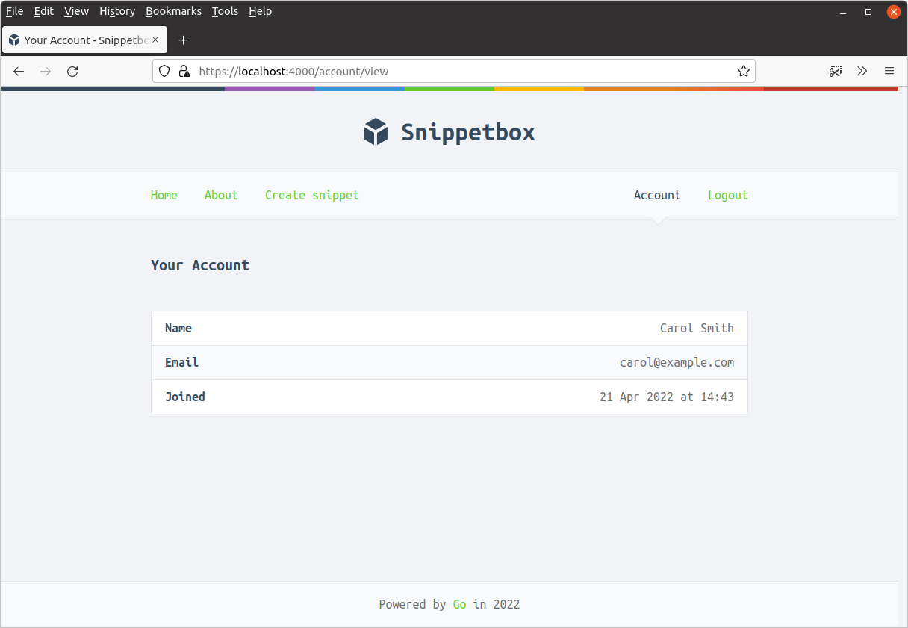
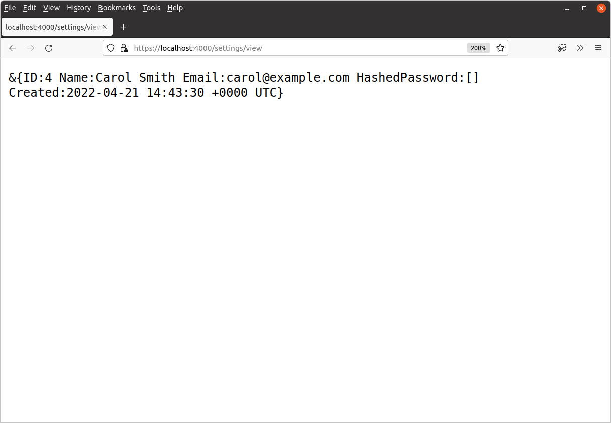

اضافه کردن صفحه 'حساب کاربری' به برنامه
هدف شما در این تمرین اضافه کردن یک صفحه جدید 'حساب کاربری شما' به برنامه است. این صفحه باید به یک مسیر جدید GET /account/view متصل شود و نام، آدرس ایمیل و تاریخ ثبتنام کاربر احراز هویت شده فعلی را نمایش دهد، مشابه این:

مرحله 1
در فایل internal/models/users.go یک متد جدید UserModel.Get() ایجاد کنید. این متد باید شناسه یک کاربر را به عنوان پارامتر بپذیرد و یک ساختار User حاوی تمام اطلاعات این کاربر (به جز رمز عبور هش شده آنها، که نیازی به آن نداریم) را برگرداند. اگر هیچ کاربری با این شناسه پیدا نشد، باید یک خطای ErrNoRecord برگرداند.
همچنین، نوع UserModelInterface را بهروزرسانی کنید تا این متد جدید Get() را شامل شود و یک متد متناظر به mocks.UserModel ما اضافه کنید تا همچنان با رابط کاربری سازگار باشد.
مرحله 2
یک مسیر GET /account/view ایجاد کنید که به یک هندلر جدید accountView متصل شود. این مسیر باید فقط برای کاربران احراز هویت شده محدود شود.
مرحله 3
هندلر accountView را بهروزرسانی کنید تا "authenticatedUserID" را از جلسه دریافت کند، جزئیات کاربر مربوطه را از پایگاه داده (با استفاده از متد جدید UserModel.Get()) دریافت کند و آنها را در یک پاسخ HTTP متنی ساده نمایش دهد. اگر هیچ کاربری مطابق با "authenticatedUserID" از جلسه پیدا نشد، کاربر را به GET /user/login هدایت کنید تا مجدداً احراز هویت شود.
وقتی به عنوان یک کاربر احراز هویت شده به https://localhost:4000/account/view در مرورگر خود مراجعه میکنید، باید پاسخی مشابه این دریافت کنید:

مرحله 4
یک فایل جدید ui/html/pages/account.tmpl ایجاد کنید که اطلاعات کاربر را در یک جدول نمایش دهد. سپس هندلر accountView را بهروزرسانی کنید تا این قالب جدید را رندر کند و جزئیات کاربر را از طریق ساختار templateData منتقل کند.
مرحله 5
علاوه بر این، نوار ناوبری اصلی سایت را بهروزرسانی کنید تا یک لینک به صفحه مشاهده حساب کاربری (فقط برای کاربران احراز هویت شده قابل مشاهده) اضافه شود. سپس بررسی کنید که صفحه جدید و ناوبری همانطور که انتظار میرود کار میکند، با مراجعه به https://localhost:4000/account/view در مرورگر خود در حالی که وارد شدهاید.
کد پیشنهادی
کد پیشنهادی برای مرحله 1
package models ... type UserModelInterface interface { Insert(name, email, password string) error Authenticate(email, password string) (int, error) Exists(id int) (bool, error) Get(id int) (User, error) } ... func (m *UserModel) Get(id int) (User, error) { var user User stmt := `SELECT id, name, email, created FROM users WHERE id = ?` err := m.DB.QueryRow(stmt, id).Scan(&user.ID, &user.Name, &user.Email, &user.Created) if err != nil { if errors.Is(err, sql.ErrNoRows) { return User{}, ErrNoRecord } else { return User{}, err } } return user, nil }
package mocks import ( "time" // New import "snippetbox.alexedwards.net/internal/models" ) ... func (m *UserModel) Get(id int) (models.User, error) { if id == 1 { u := models.User{ ID: 1, Name: "Alice", Email: "alice@example.com", Created: time.Now(), } return u, nil } return models.User{}, models.ErrNoRecord }
کد پیشنهادی برای مرحله 2
... func (app *application) accountView(w http.ResponseWriter, r *http.Request) { // Some code will go here later... }
package main ... func (app *application) routes() http.Handler { mux := http.NewServeMux() mux.Handle("GET /static/", http.FileServerFS(ui.Files)) mux.HandleFunc("GET /ping", ping) dynamic := alice.New(app.sessionManager.LoadAndSave, noSurf, app.authenticate) mux.Handle("GET /{$}", dynamic.ThenFunc(app.home)) mux.Handle("GET /about", dynamic.ThenFunc(app.about)) mux.Handle("GET /snippet/view/{id}", dynamic.ThenFunc(app.snippetView)) mux.Handle("GET /user/signup", dynamic.ThenFunc(app.userSignup)) mux.Handle("POST /user/signup", dynamic.ThenFunc(app.userSignupPost)) mux.Handle("GET /user/login", dynamic.ThenFunc(app.userLogin)) mux.Handle("POST /user/login", dynamic.ThenFunc(app.userLoginPost)) protected := dynamic.Append(app.requireAuthentication) mux.Handle("GET /snippet/create", protected.ThenFunc(app.snippetCreate)) mux.Handle("POST /snippet/create", protected.ThenFunc(app.snippetCreatePost)) // Add the view account route, using the protected middleware chain. mux.Handle("GET /account/view", protected.ThenFunc(app.accountView)) mux.Handle("POST /user/logout", protected.ThenFunc(app.userLogoutPost)) standard := alice.New(app.recoverPanic, app.logRequest, commonHeaders) return standard.Then(mux) }
کد پیشنهادی برای مرحله 3
... func (app *application) accountView(w http.ResponseWriter, r *http.Request) { userID := app.sessionManager.GetInt(r.Context(), "authenticatedUserID") user, err := app.users.Get(userID) if err != nil { if errors.Is(err, models.ErrNoRecord) { http.Redirect(w, r, "/user/login", http.StatusSeeOther) } else { app.serverError(w, r, err) } return } fmt.Fprintf(w, "%+v", user) }
کد پیشنهادی برای مرحله 4
... type templateData struct { CurrentYear int Snippet models.Snippet Snippets []models.Snippet Form any Flash string IsAuthenticated bool CSRFToken string User models.User } ...
{{define "title"}}Your Account{{end}}
{{define "main"}}
<h2>Your Account</h2>
{{with .User}}
<table>
<tr>
<th>Name</th>
<td>{{.Name}}</td>
</tr>
<tr>
<th>Email</th>
<td>{{.Email}}</td>
</tr>
<tr>
<th>Joined</th>
<td>{{humanDate .Created}}</td>
</tr>
</table>
{{end }}
{{end}}
... func (app *application) accountView(w http.ResponseWriter, r *http.Request) { userID := app.sessionManager.GetInt(r.Context(), "authenticatedUserID") user, err := app.users.Get(userID) if err != nil { if errors.Is(err, models.ErrNoRecord) { http.Redirect(w, r, "/user/login", http.StatusSeeOther) } else { app.serverError(w, r, err) } return } data := app.newTemplateData(r) data.User = user app.render(w, r, http.StatusOK, "account.tmpl", data) }
کد پیشنهادی برای مرحله 5
{{define "nav"}}
<nav>
<div>
<a href='/'>Home</a>
<a href='/about'>About</a>
{{if .IsAuthenticated}}
<a href='/snippet/create'>Create snippet</a>
{{end}}
</div>
<div>
{{if .IsAuthenticated}}
<!-- Add the view account link for authenticated users -->
<a href='/account/view'>Account</a>
<form action='/user/logout' method='POST'>
<input type='hidden' name='csrf_token' value='{{.CSRFToken}}'>
<button>Logout</button>
</form>
{{else}}
<a href='/user/signup'>Signup</a>
<a href='/user/login'>Login</a>
{{end}}
</div>
</nav>
{{end}}